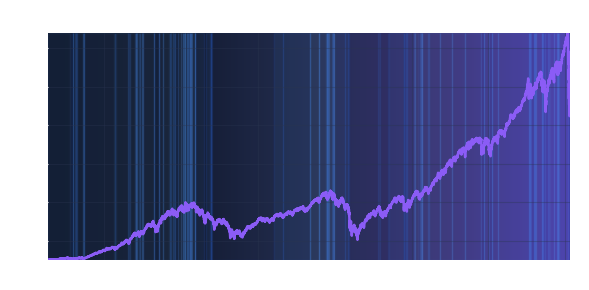
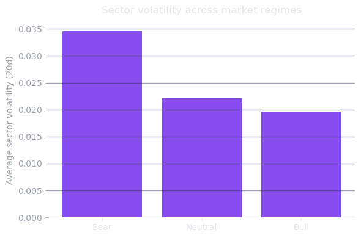
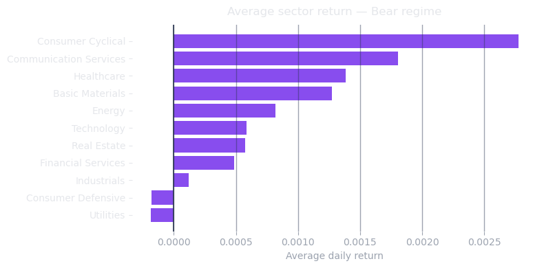
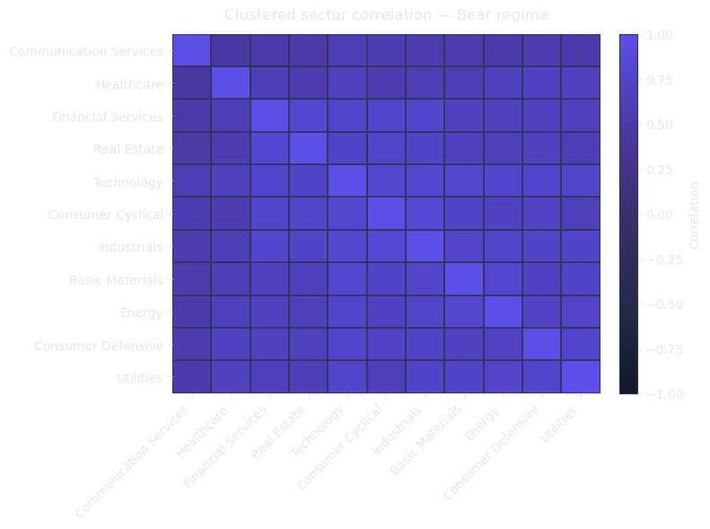
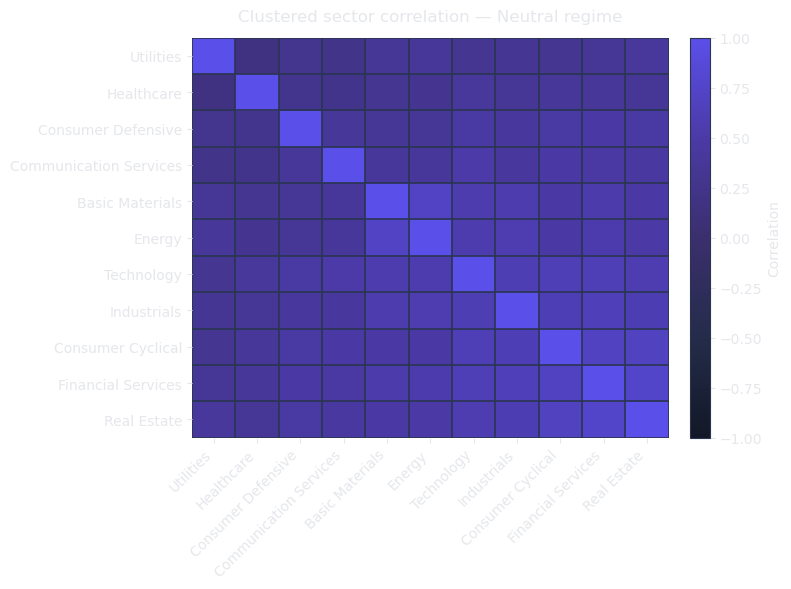
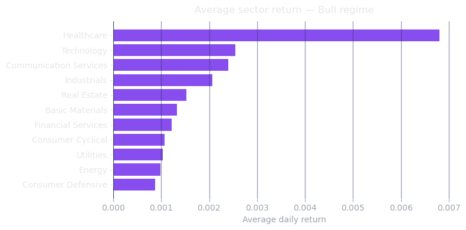
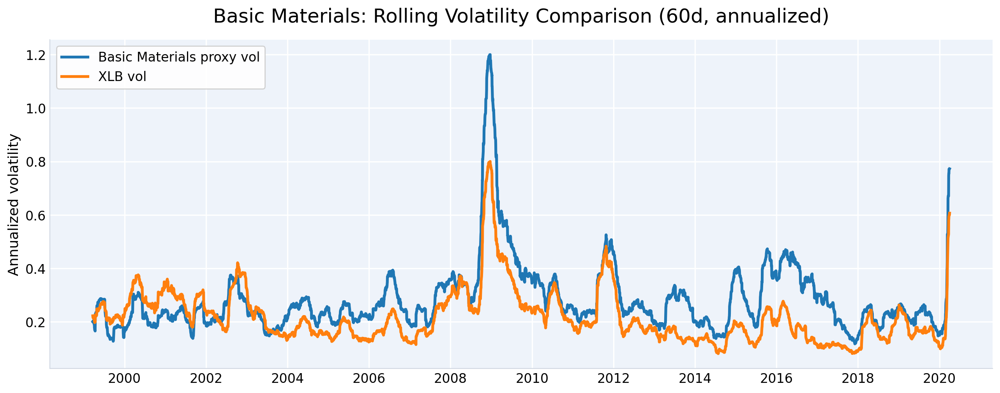

Understanding Investing, Made Practical
Stop guessing. Discover which market features truly drive returns and risk.
We turn raw market behavior into a decision toolkit: diversification of sectors → influence of regimes → representative stocks → ETF vs DIY → a final strategy picker.
One chart, may look simple,
Until you ask what lies beneath.

Motivation
Financial markets are often explained with narratives, intuition, or isolated indicators, yet investors ultimately face a structural question: What truly drives returns and risk? We are motivated by the need to move beyond guesswork and systematically identify the market features that shape performance. By analyzing sectors, volatility, correlations, and market regimes extracted from real data, we aim to reveal how risk and return reorganize across different market conditions. Rather than predicting prices, the goal is to provide an interpretable framework that helps investors understand when certain exposures perform well, when diversification breaks down, and how market structure evolves over time.
The investor problem
Investors face a market driven by multiple interacting forces, yet decisions are often made by focusing on a single dimension at a time. Sectors, volatility, correlations, and market conditions are typically analyzed in isolation, making it difficult to understand what truly matters for returns and risk.
Our promise
We offer a feature-driven view of the market. By jointly analyzing sectors, risk, correlations, and regimes, we identify the structural drivers of performance. The goal is not prediction, but clarity: helping investors understand which features shape outcomes and how their influence changes across market conditions.
Roadmap: 5 chapters
Same fintech layout, but now the story is cleaner: five big chapters, each with subparts. You can read it top-to-bottom like a product guide.
Chapters
Each chapter has subparts: (1) what we show, (2) why it matters, and (3) chart placeholders you’ll fill from script.js.
Chapter 1) Sector Diversification (Correlation + Structure)
Start with the foundation: which sectors truly diversify each other — and when that breaks.
Subparts
- 1.1 Correlation heatmaps — full sample vs last 20y vs last 5y
- 1.2 Rolling correlations — 60d vs 120d, so “diversification failure” is visible
- 1.3 Sector map (UMAP) — sectors close together behave similarly (often redundant)
Why it matters
- Stops “fake diversification” early
- Shows regime dependence (correlations often rise in stress)
- Gives a clean structure you build on later
Chapter 2: Influence Of The Regimes On the Sectors' Returns And Volatilities
Do sectors behave the same way in bull, neutral, and bear markets — or does the regime reshape everything?
In the previous chapter, we focused on sectors themselves, treating the market environment as fixed and comparing returns, volatility, and co-movement across sectors in a static way. While this approach highlights structural differences between sectors, it implicitly assumes that these relationships remain stable over time.
In reality, market conditions change. Periods of stress, recovery, and expansion do not affect all sectors in the same way, nor do they preserve the same levels of risk or diversification. Ignoring these shifts can lead to misleading conclusions about sector performance and risk exposure.
In this chapter, we introduce market regimes as a way to capture these changing conditions. Using the S&P 500 index (SPY) as a proxy for the overall market, each point in time is classified into one of three regimes: Bear, Neutral, or Bull. Sector returns, correlations, and volatilities are then analyzed conditionally on the prevailing regime, allowing us to observe how sector behavior adapts to different market environments.
By moving from a static sector view to a regime-aware perspective, this chapter explores how the same sectors can exhibit very different risk and return profiles depending on the broader market context.
Bear markets are marked by high correlations and elevated volatility, which strongly limit diversification benefits. Risk tends to concentrate in tightly correlated cyclical sectors, amplifying market stress. While some sectors still achieve positive returns, higher performance is usually associated with higher volatility. Sectors combining positive returns with lower volatility and weaker correlations appear more resilient during this regime.
Neutral markets are characterized by positive returns for most sectors and lower overall volatility compared to Bear regimes. Correlations remain high, but risk is less concentrated, allowing clearer differentiation between stable and cyclical sectors. Sectors that combine strong returns with lower volatility and looser correlation to the cyclical core appear best positioned, while highly volatile sectors remain sensitive despite the absence of strong market stress.
Bull markets are characterized by broad-based positive returns and strong sector co-movement. Correlations are high, reflecting a unified upward market dynamic, while volatility is relatively contained compared to Bear regimes. Performance differences are driven more by sector exposure to growth than by risk isolation. In this environment, sectors aligned with expansion benefit the most, while diversification across sectors provides limited additional protection.
Across all regimes, one key insight stands out: there is no universally “best” sector in absolute terms. Sector attractiveness depends on the market environment, and a sector that performs well in one regime can underperform or become excessively risky in another. By defining regimes using market-wide information and conditioning sector analysis on those regimes, this framework provides a structured way to think about risk, return, and diversification dynamically rather than statically. Overall, regimes play a key role in your strategy.
Explore by regime



Sector behavior varies over time, with noticeable changes in both co-movement and risk. Periods of stronger alignment between sectors alternate with phases where diversification is more effective. At the same time, overall sector volatility shifts across market environments, with some regimes exhibiting consistently higher risk than others. These patterns suggest that both returns and volatility respond differently depending on the prevailing market regime



During the Bear regime, sector performance is very uneven. Consumer Cyclical delivers the highest average returns by a large margin, followed by Communication Services. Healthcare and Basic Materials also remain positive, while Energy, Technology, Real Estate, and Financial Services hover close to zero. Consumer Defensive and Utilities are the only sectors with clearly negative returns. Volatility is high overall, but not evenly distributed. Financial Services is the most volatile sector, followed by Real Estate and Basic Materials. Consumer Cyclical also shows elevated volatility, meaning its strong returns come with substantial risk. Communication Services offers a better balance, combining relatively high returns with lower volatility than most cyclical sectors. Healthcare stands out with positive returns and among the lowest volatility levels in this regime. Correlations between sectors are strong during Bear markets. Most sectors move together, especially Financial Services, Real Estate, Technology, Consumer Cyclical, Industrials, and Basic Materials, forming a tightly correlated high-risk cluster. Energy is strongly linked to this group as well. Healthcare and Communication Services remain positively correlated but slightly less tightly, which helps explain their more stable behavior. Defensive sectors sit at the edge of the correlation structure but do not fully decouple from the market.



In the Neutral regime, sector returns are more balanced, but clear leaders still emerge. Healthcare delivers the highest average return, followed by Basic Materials and Energy. Consumer Defensive also performs well, while Communication Services sits in the middle with moderate positive returns. Utilities, Technology, and Real Estate show smaller but still positive returns. Industrials and Financial Services are close to zero, while Consumer Cyclical is the only sector with clearly negative average returns in this regime. Volatility is lower than in Bear markets but remains differentiated across sectors. Basic Materials is the most volatile sector, followed by Energy and Consumer Cyclical. Communication Services and Technology show moderate volatility, while Healthcare, Financial Services, and Consumer Defensive are among the least volatile sectors. This places Healthcare and Consumer Defensive in a favorable position, combining strong or moderate returns with relatively low risk. Correlations remain high across sectors, but the structure is more organized than in Bear markets. Most sectors are positively correlated, forming a broad common cluster. Cyclical sectors such as Basic Materials, Energy, Industrials, Consumer Cyclical, Financial Services, and Real Estate are tightly linked, indicating shared dynamics. Healthcare, Consumer Defensive, and Utilities are still positively correlated with the rest of the market but sit slightly apart from the cyclical core, suggesting more stable behavior. The sectors offering the best risk-return profiles, notably Healthcare, are also less exposed to the most volatile correlation clusters.



In the Bull regime, all sectors deliver positive average returns, but leadership is very clear. Healthcare dominates by a wide margin, showing the highest returns in this regime. Technology and Communication Services follow, both with strong positive performance. Industrials also perform well, while Real Estate, Basic Materials, and Financial Services form a middle group with moderate returns. Consumer Cyclical, Utilities, Energy, and Consumer Defensive lag behind but still remain positive. Volatility is generally lower and more evenly distributed than in Bear markets. Healthcare and Basic Materials are the most volatile sectors, followed by Energy and Consumer Cyclical. Technology and Communication Services show moderate volatility, while Consumer Defensive and Financial Services are among the least volatile sectors. This means that some of the strongest performers, such as Healthcare, also carry higher risk, while others like Technology offer a more balanced return–volatility profile. Correlations remain high across sectors in the Bull regime, indicating a strong common market driver. Cyclical and growth-oriented sectors such as Technology, Financial Services, Energy, Basic Materials, and Consumer Cyclical are tightly correlated, forming a coherent expansion cluster. Defensive sectors like Healthcare and Consumer Defensive remain positively correlated with the rest of the market but are slightly less embedded in the core cyclical cluster. The highest-return sectors tend to remain strongly correlated with the broader market, meaning performance is driven by overall market strength rather than isolated sector behavior.
Chapter 3) ETF vs DIY Basket
The practical question: should you buy the sector ETF, or recreate exposure yourself?
Intro
This section compares a sector ETF (e.g., XLK) with a DIY sector proxy (“basket”) built from the sector’s underlying stocks using a volume-weighted construction. The goal is to check whether the ETF delivers exposure that is similar to what you would get from a transparent, rules-based basket—and to see how their risk evolves through time.
Plot 1 — Performance (Index = 100)
What the plot shows
Both series are rebased to 100 on the same start date, so the chart is comparing growth paths, not absolute prices.
- ETF: the sector ETF.
- Basket: a DIY proxy built from the sector’s stocks using volume-weighted weights.
How to interpret it
- If the two lines track closely, the ETF and the basket provide similar exposure (at least in aggregate).
-
If the lines drift apart, the ETF and the basket are capturing different exposure,
typically due to:
- differences in constituents (inclusions/exclusions),
- differences in weighting rules (cap-weighted vs your volume-weighted method),
- caps/constraints that change concentration.
Plot 2 — Volatility (Rolling, Annualized)
What the plot shows
Rolling annualized volatility summarizes “how wild the ride is” (risk) and how that risk changes over time.
It answers:
- When was the sector risky?
- Did ETF and basket risk spike at the same times?
- Is one consistently smoother or more explosive during stress?
How to interpret it
-
Volatility and performance are related but not the same:
- Similar performance, different volatility: one path is smoother, the other bumpier.
- Similar volatility, different performance: they take different bets and drift apart.
- Different regimes: one may react more strongly in crises even if long-run growth is similar.
Method note
- We compute daily log returns.
- ETF and basket are aligned on identical trading dates.
Small conclusion
Overall, the DIY stock basket tends to outperform the sector ETF in this demo. The main exception is the housing market, where the ETF performs better than the basket. In terms of risk, the ETFs are generally less volatile than the stock baskets, meaning the ETF path is typically smoother even when long-run performance is similar or lower. This points to a trade-off: the basket often delivers higher returns, but the ETF usually provides a less bumpy ride.
Choose a sector


Interpretation (placeholder):
Interpretation not ready for sector basic_materials.


Chapter 4) Regime Analysis (Bull / Bear / Neutral)
Markets change. We label regimes and recompute sector behavior inside each one.
Subparts
- 4.1 Market index with regime shading — when bull/bear happens
- 4.2 Winners/losers by regime — which sectors hold up in bear markets
Why it matters
- Explains why diversification fails when it matters most
- Identifies defensive sectors empirically
- Feeds directly into the strategy picker
Chapter 5) Investor Profile Mapping (Final Synthesis)
Convert everything into a simple framework: what to buy depends on your risk tolerance and the current regime.
Subparts
- 5.1 Profiles — conservative / balanced / aggressive
- 5.2 Regime-aware choices — bull vs bear changes what “sensible” means
- 5.3 Final output — strategy picker chooses between ETF vs basket vs category
Why it matters
- Turns analysis into a product
- Gives a clear decision rule, not a long report
- Lets you tailor recommendations to the user
Interactive Strategy Picker
Choose your profile, regime assumption, and preferred instrument: ETFs vs sector baskets vs market category. Instantly see expected returns and volatility.
Controls
This is the “product” moment: the site becomes a decision tool.